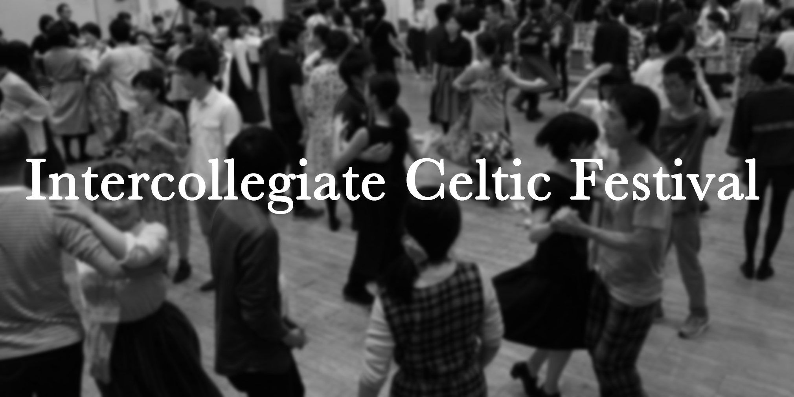

    <!--background color-->
    <script type="text/javascript">
        document.write ('<body style="background: Gainsboro; background-attachment: fixed;">')
    </script>

    <section id="conference" class="black-frame about about-container about-container-top">
      <h1>{{ page.title }}</h1>
      

      <h2 class="first">ICFとは</h2>

      <p>Intercollegiate Celtic Festivalの略称。</p>
      <p>アイルランドの伝統音楽とセットダンスにどっぷり浸かる3日間！2010年に始まった、学生を中心に全国のアイリッシュ好きが集まり、地域・世代を越えてみんなで交流を深めるイベントです。初めての方も経験者の方も、参加大歓迎！</p>

      <p>第10回までは、3月にICF、9月にクラスや宿泊のないプチICFを開催していましたが、今回の第11回から、9月にも3日間のICF夏の陣を開催することになりました！</p>

      <h2 class="forth">ICFスローガン 「楽しむ、つながる、アイリッシュ」</h2>

      <p>「楽しむ」 上手いもいいけどまずは楽しく</p>
      <p>「つながる」 たくさん見つける新たな仲間</p>
      <p>「アイリッシュ」 覗いてみようアイルランドの伝統</p>

      <h2 class="first">ICF実行委員</h2>

      <p>ICFは各地の大学生により結成されたICF実行委員会が、非営利で運営しています。フレッシュなパワーで、楽しいイベントを作り上げようと日々頑張っています！</p>
      
      <h2 class="first">代表挨拶</h2>

      <p>こんにちは！第11回ICFの代表に就任しました山内里奈です。</p>
      <p>私は2年前に大学のサークルで出会って以来、アイルランドの音楽とそれを演奏し踊り愛する人々・場が大好きです。他ケルト圏の音楽や北欧音楽も大好きです。このちょっと珍しい音楽を布教し一緒に楽しんでくださる先達には深く感謝し、私自身も同じように新たに始める方の助けとなれたらと思っております。</p>
      <p>今年のICFでは、「もっとちゃんと初心者に向き合ったICFにしたい」「深い内容もやりたい」「アイリッシュの演奏に限らず色々なことに挑戦してみてほしい」との思いがあります。</p>
      <p>ですが、昨年度の第10回ICFの企画に携わりながら、ICF開始当時に比べて学生のレベルや興味の幅が広がった現在の状況で、初心者の役に立つことと、多様な楽しみ方・ディープな内容を応援すること、両方の理想を同時に満たすことは難しいと感じていました。</p>
      <p>そこで今年は徹底的に初心者が楽しみ学べるICF夏の陣、多様なこと・深い内容に挑戦するICF春の陣とターゲットを分け、初心者もアイルランド音楽にどっぷりはまっている人も楽しめるようにしたいと思います。もちろん例年通り、交流を大切にしセッションやケーリーもたくさんあります。お楽しみに！</p>
      <p>今回は、前代の整備してくださったシステム・土台のもとに主に内容面でたくさんの新たなことに挑戦することになります。頼もしい委員会の仲間達に頼りながら一つずつ実践して行きたいと思います。また、より良いICFを創り上げるために、皆様のお力添えが不可欠ですので、どうぞ応援のほど宜しくお願い致します。</p>
      <p>第11回ICF代表　山内里奈</p>

    </section>

    <section id="committee" class="black-frame about about-container">
      <h1>実行委員に参加してみたい方へ</h1>

      <p>実行委員会は次の回のICFに向けて前年の5月を目安に発足します。委員募集は発足に向けて3月から5月まで行っておりますが、お問い合わせはいつでも大歓迎です！ 当日の仕事や自宅でできる仕事などもあるので、様々な地方の学生の皆様の参加をお待ちしております！</p>
      <p>一緒にICFを動かしてみませんか？</p>
      <p>お問い合わせは<a href="mailto:info@icf-shamrock.com">info@icf-shamrock.com</a>まで！</p>

      <h2>実行委員会のお仕事</h2>
      <p>今年は上野をメインに活動しておりますが、その年の実行委員の都合に合わせて設定します。</p>
      <h3>代表・副代表</h3>
      <p>代表・副代表は外部の方との連絡窓口兼実行委員のまとめ役です！講師の方との連絡や、問い合わせ対応、会議のセッティングや進行、各係の進行状況の確認、指示出し等大変ですがやりがいのある仕事です♪</p>

      <h3>会計</h3>
      <p>会計は主に、申し込みの管理と口座の管理を行っています。どんな方が申し込んでくださるか、毎日ワクワクしながら仕事をしています！</p>

      <h3>Web係</h3>
      <p>ICFのホームページをデザイン、管理、更新する係です。イベント情報の紹介や告知を皆様にいち早く届けます。</p>

      <h3>Twitter係・Facebook係</h3>
      <p>それぞれのSNSアカウントで、ICF関連の情報を随時発信する係です！</p>

      <h3>フライヤー係</h3>
      <p>フライヤー関連の仲介役です☆掲載事項をまとめデザイナーとのやりとりをしたり、完成後は地方と連絡を取り必要枚数を発送したりします。</p>

      <h3>交流会係</h3>
      <p>交流会係は夜の交流会の準備、運営をします。楽しい企画で、参加者の皆さんが仲良くなれるように努めます！</p>

      <h3>パレード係</h3>
      <p>ICFのサブイベントである表参道のセントパトリックスパレード参加を取り仕切ります！パレードの説明会への参加や、練習、移動などをまとめる係です。</p>

      <h3>準備片付け係</h3>
      <p>各プログラムの会場設営、撤収作業を取り仕切る係です！</p>

      <h3>リネン係</h3>
      <p>参加者のみなさんのリネンの配布・回収を取り仕切ります。キレイに畳んだリネンを施設にお返しすることを目指します！</p>

      <h3>写真係</h3>
      <p>当日写真をとったり、皆さんがとってくださったものをまとめたりします！</p>

      <h3>当日・後日打ち上げ係</h3>
      <p>打ち上げ係は、ICF後により皆さんで親睦を深められるよう宴会の手配をします！</p>

      <h3>名札作成係</h3>
      <p>当日受付で配布する名札を作成する係です！</p>

      <h3>アンケート係</h3>
      <p>ICFのあとに参加者のみなさんや講師の方々に答えていただくアンケートを作成、集計する係です！</p>

      <h2>年間の活動予定</h2>
      <ul>
        <li>5月 発足会議</li>
        <li>〜9月 ICFのプログラム考案、講師決定</li>
        <li>9月 プチICF</li>
        <li>11月〜翌年1月 ICF申し込み期間</li>
        <li>2月 ICF申し込み締め切り</li>
        <li>3月 ICF本番、反省会</li>
      </ul>
      <p>会議は2ヶ月に1回程度行います。Skype参加もOKなので、東京に住んでいなくても大丈夫です！</p>

    </section>

    <section id="terms" class="black-frame about about-container">
      <h1>運営規約</h1>
      <p>Intercollegiate Celtic Festival実行委員会運営規約</p>
      <ol>
      {% for term in site.data.terms %}
      <li>{{ term.title }}
        <div>{{ term.text }}</div>
        <ol>
          {% for statement in term.statements %}
          <li>{{ statement.text }}
            {% if statement.statements %}
            <ol>
              {% for st2 in statement.statements %}
              <li>{{ st2.text }}</li>
              {% endfor %}
            </ol>
            {% endif %}
          </li>
          {% endfor %}
        </ol>
      </li>
      {% endfor %}
      </ol>

    </section>

    <section id="privacy" class="black-frame about about-container">
      <h1>プライバシーポリシー</h1>
      <p>
Intercollegiate Celtic Festival（以下，「ICF」といいます。）は，本ウェブサイト上で提供するサービス（以下,「本サービス」といいます。）におけるプライバシー情報の取扱いについて，以下のとおりプライバシーポリシー（以下，「本ポリシー」といいます。）を定めます。

第1条（プライバシー情報）
プライバシー情報のうち「個人情報」とは，個人情報保護法にいう「個人情報」を指すものとし，生存する個人に関する情報であって，当該情報に含まれる氏名，生年月日，住所，電話番号，連絡先その他の記述等により特定の個人を識別できる情報を指します。
プライバシー情報のうち「履歴情報および特性情報」とは，上記に定める「個人情報」以外のものをいい，ご利用いただいたサービスやご購入いただいた商品，ご覧になったページや広告の履歴，ユーザーが検索された検索キーワード，ご利用日時，ご利用の方法，ご利用環境，郵便番号や性別，職業，年齢，ユーザーのIPアドレス，クッキー情報，位置情報，端末の個体識別情報などを指します。
第２条（プライバシー情報の収集方法）
ICFは，ユーザーが利用登録をする際に氏名，生年月日，住所，電話番号，メールアドレス，銀行口座番号，クレジットカード番号，運転免許証番号などの個人情報をお尋ねすることがあります。また，ユーザーと提携先などとの間でなされたユーザーの個人情報を含む取引記録や，決済に関する情報を当社の提携先（情報提供元，広告主，広告配信先などを含みます。以下，｢提携先｣といいます。）などから収集することがあります。
当社は，ユーザーについて，利用したサービスやソフトウエア，購入した商品，閲覧したページや広告の履歴，検索した検索キーワード，利用日時，利用方法，利用環境（携帯端末を通じてご利用の場合の当該端末の通信状態，利用に際しての各種設定情報なども含みます），IPアドレス，クッキー情報，位置情報，端末の個体識別情報などの履歴情報および特性情報を，ユーザーが当社や提携先のサービスを利用しまたはページを閲覧する際に収集します。
第３条（個人情報を収集・利用する目的）
ICFが個人情報を収集・利用する目的は，以下のとおりです。

（1）ユーザーに自分の登録情報の閲覧や修正，利用状況の閲覧を行っていただくために，氏名，住所，連絡先，支払方法などの登録情報，利用されたサービスや購入された商品，およびそれらの代金などに関する情報を表示する目的
（2）ユーザーにお知らせや連絡をするためにメールアドレスを利用する場合やユーザーに商品を送付したり必要に応じて連絡したりするため，氏名や住所などの連絡先情報を利用する目的
（3）ユーザーの本人確認を行うために，氏名，生年月日，住所，電話番号，銀行口座番号，クレジットカード番号，運転免許証番号，配達証明付き郵便の到達結果などの情報を利用する目的
（4）ユーザーに代金を請求するために，購入された商品名や数量，利用されたサービスの種類や期間，回数，請求金額，氏名，住所，銀行口座番号やクレジットカード番号などの支払に関する情報などを利用する目的
（5）ユーザーが簡便にデータを入力できるようにするために，当社に登録されている情報を入力画面に表示させたり，ユーザーのご指示に基づいて他のサービスなど（提携先が提供するものも含みます）に転送したりする目的
（6）代金の支払を遅滞したり第三者に損害を発生させたりするなど，本サービスの利用規約に違反したユーザーや，不正・不当な目的でサービスを利用しようとするユーザーの利用をお断りするために，利用態様，氏名や住所など個人を特定するための情報を利用する目的
（7）ユーザーからのお問い合わせに対応するために，お問い合わせ内容や代金の請求に関する情報など当社がユーザーに対してサービスを提供するにあたって必要となる情報や，ユーザーのサービス利用状況，連絡先情報などを利用する目的
（8）上記の利用目的に付随する目的
第４条（個人情報の第三者提供）
ICFは，次に掲げる場合を除いて，あらかじめユーザーの同意を得ることなく，第三者に個人情報を提供することはありません。ただし，個人情報保護法その他の法令で認められる場合を除きます。
（1）法令に基づく場合
（2）人の生命，身体または財産の保護のために必要がある場合であって，本人の同意を得ることが困難であるとき
（3）公衆衛生の向上または児童の健全な育成の推進のために特に必要がある場合であって，本人の同意を得ることが困難であるとき
（4）国の機関もしくは地方公共団体またはその委託を受けた者が法令の定める事務を遂行することに対して協力する必要がある場合であって，本人の同意を得ることにより当該事務の遂行に支障を及ぼすおそれがあるとき
（5）予め次の事項を告知あるいは公表をしている場合
利用目的に第三者への提供を含むこと
第三者に提供されるデータの項目
第三者への提供の手段または方法
本人の求めに応じて個人情報の第三者への提供を停止すること
前項の定めにかかわらず，次に掲げる場合は第三者には該当しないものとします。
（1）ICFが利用目的の達成に必要な範囲内において個人情報の取扱いの全部または一部を委託する場合
（2）合併その他の事由による事業の承継に伴って個人情報が提供される場合
（3）個人情報を特定の者との間で共同して利用する場合であって，その旨並びに共同して利用される個人情報の項目，共同して利用する者の範囲，利用する者の利用目的および当該個人情報の管理について責任を有する者の氏名または名称について，あらかじめ本人に通知し，または本人が容易に知り得る状態に置いているとき
第５条（個人情報の開示）
ICFは，本人から個人情報の開示を求められたときは，本人に対し，遅滞なくこれを開示します。ただし，開示することにより次のいずれかに該当する場合は，その全部または一部を開示しないこともあり，開示しない決定をした場合には，その旨を遅滞なく通知します。なお，個人情報の開示に際しては，１件あたり１，０００円の手数料を申し受けます。
（1）本人または第三者の生命，身体，財産その他の権利利益を害するおそれがある場合
（2）ICFの業務の適正な実施に著しい支障を及ぼすおそれがある場合
（3）その他法令に違反することとなる場合
前項の定めにかかわらず，履歴情報および特性情報などの個人情報以外の情報については，原則として開示いたしません。
第６条（個人情報の訂正および削除）
ユーザーは，当社の保有する自己の個人情報が誤った情報である場合には，当社が定める手続きにより，当社に対して個人情報の訂正または削除を請求することができます。
当社は，ユーザーから前項の請求を受けてその請求に応じる必要があると判断した場合には，遅滞なく，当該個人情報の訂正または削除を行い，これをユーザーに通知します。
第７条（個人情報の利用停止等）
ICFは，本人から，個人情報が，利用目的の範囲を超えて取り扱われているという理由，または不正の手段により取得されたものであるという理由により，その利用の停止または消去（以下，「利用停止等」といいます。）を求められた場合には，遅滞なく必要な調査を行い，その結果に基づき，個人情報の利用停止等を行い，その旨本人に通知します。ただし，個人情報の利用停止等に多額の費用を有する場合その他利用停止等を行うことが困難な場合であって，本人の権利利益を保護するために必要なこれに代わるべき措置をとれる場合は，この代替策を講じます。

第８条（プライバシーポリシーの変更）
本ポリシーの内容は，ユーザーに通知することなく，変更することができるものとします。
当社が別途定める場合を除いて，変更後のプライバシーポリシーは，本ウェブサイトに掲載したときから効力を生じるものとします。
第９条（お問い合わせ窓口）
本ポリシーに関するお問い合わせは，下記の窓口までお願いいたします。

団体名：Intercollegiate Celtic Festival
Eメールアドレス：info@icf-shamrock.com
</p>
    </section>
